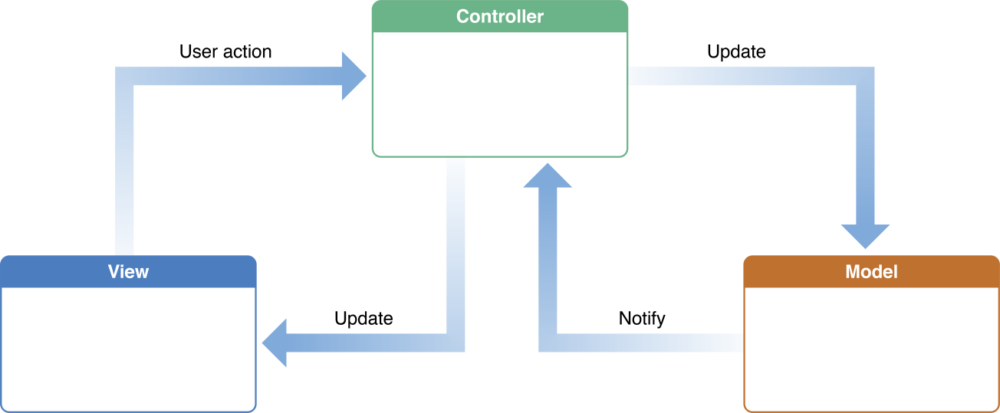
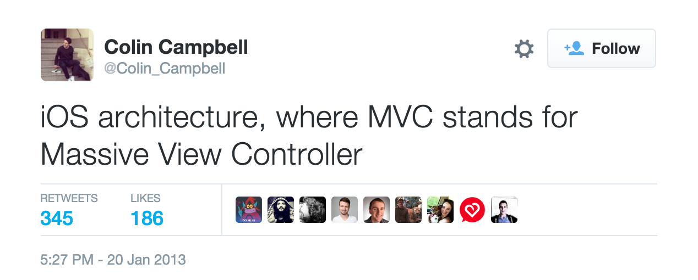

MVVM on iOS
Josh Lehman
josh@savvy.ai
MVC: Model-View-Controller

- Architectural design pattern
- Developed by Xerox PARC in the 1970s
- Expressed as a general concept in 1988
It's an old concept
- Which is not bad
- Good ideas are improved upon over time
MVVM: Model-View-ViewModel

- Developed by Microsoft, announced in 2005
- A slight addition to MVC
- We'll discuss Data Binding later
Adds the ViewModel
"The central component of MVC, the model, captures the behavior of the application in terms of its problem domain, independent of the user interface."
(where user interface is the View and Controller)
The
ViewModelcaptures the behaviors of an user interface in terms of general user interactions, independent of the view itself.
Why is this a good thing?

- Smaller view controllers!
- Lower coupling
- Decouples GUI code from presentation logic and state
- Headless testing
View and ViewModel Relationship
- Generally, one
ViewModelper controller orUIViewsubclass:UIViewControllerUITableViewCellUICollectionViewCell- etc.
Ownership
- The View owns the ViewModel
- ViewModels know nothing about Views
- The ViewModel owns the Model
- Models know nothing about ViewModels
- The View knows nothing about the Model
Views do not communicate!
Views communicate with their ViewModels, which communicate with each other.
Problem
If the view's state is stored in a ViewModel class, how do we keep the two in
sync?
Data Binding
- Not strictly necessary, but really helpful
- Delegates can work here, but are more verbose
- Helps keep
ViewModelin sync with itsView
1-way > 2-way
- 2-way binding is really hard (it's cyclical)
- If 2-way binding seems like the only solution, find a better solution
ReactiveCocoa (RAC)
- Mostly based on Functional Reactive Programming (FRP)
- Represent data as "streams of values over time"
- Used at: Savvy, Snapchat, GitHub, probably some other places too
Popular and well-maintained
- First released
- 2/26/2012
- Last commit to master
- 11/3/2015 (at time of writing)
- Stars
- 11,081
- Contributors
- 129
Bond
- A data binding framework
- Less concept-heavy
- Also well maintained
- I am less familiar with it – examples will use RAC
Interlude: ReactiveCocoa
What is "Functional Reactive Programming"?
Functional reactive programming (FRP) is a programming paradigm for reactive programming (asynchronous dataflow programming) using the building blocks of functional programming (e.g. map, reduce, filter).
Signals
- Represent streams of values (data) as they change
- Signals can be observed
- Two varieties in RAC:
SignalProducerandSignal - Send events:
next: The data that the signal carries – can happen many timeserror: An error occurred – terminatesinterrupted: The signal was interrupted – terminatescompleted: Successful completion – terminates
Signal Producers
func doNetworkStuff() -> SignalProducer<JSON, NoError> let producer = doNetworkStuff() producer.startWithNext { json in print(json) }
- Has to be "started" to do anything
- Kind of like promises
- Network requests are a good example
Signals
- Send values regardless of whether or not anything is observing
- "Always On" semantics
Mutable Properties
let text = MutableProperty<String>("Hello, World!") text.value // => "Hello, World!" text.producer // => SignalProducer<String, NoError> text.producer.startWithNext { s in print(s) } // prints "Hello, World!" text.value = "Yo." // prints "Yo"
- Exposes a
SignalProducerof the values in the property
Binding
let (observer, producer) = SignalProducer<String, NoError>.buffer() let text = MutableProperty<String>("") text <~ producer observer.sendNext("a") text.value // "a" observer.sendNext("b") text.value // "b"
- We can bind the result of a
SignalProducerto aMutableProperty - The binding operator:
<~ - No
KVO!
Actions
func saveTodoOnServer(todo: Todo) -> SignalProducer<Bool, NSError> { return SignalProducer(value: true) } let createTodo = Action { (t: Todo) -> SignalProducer<Bool, NSError> in return saveTodoOnServer(t) } let todo = Todo() createTodo.values.observeNext { success in print(success) } createTodo.apply(todo) // => SignalProducer<Bool, NSError> createTodo.apply(todo).start() // prints "true" createTodo.apply(todo).start() // prints "true"
- Like a function, but where the result of invocation is observed rather than
returned
- Can have many observers!
- Take parameters, return a
SignalProducer- We apply parameters, and then start the resulting producer
- Expose
valuesproperty: ASignalof the values of theSignalProducer
A Sample Application: Todo List
ViewModels Drive the Application
protocol ViewModelServicesProtocol { var todo: TodoServiceProtocol { get } var date: DateServiceProtocol { get } func push(viewModel: ViewModelProtocol) func pop(viewModel: ViewModelProtocol) } protocol ViewModelProtocol { var services: ViewModelServicesProtocol { get } }
Navigation
func push(viewModel: ViewModelProtocol) func pop(viewModel: ViewModelProtocol)
- ViewModels will instantiate and
pushother ViewModels. - Services are responsible for instantiating the proper Views.
Model Services
protocol TodoServiceProtocol { func update(todo: Todo) -> SignalProducer<Todo, NoError> func delete(todo: Todo) -> SignalProducer<Bool, NoError> func create(note: String, dueDate: NSDate) -> SignalProducer<Todo, NoError> }
- Model services deal with stateful resources, e.g. network operations
- Only ViewModels have access to services
Views Observe ViewModels and React
class TodoTableViewModel: ViewModel, CreateTodoViewModelDelegate { let todos = MutableProperty<[TodoCellViewModel]>([]) let deleteTodo: Action<(todos: [TodoCellViewModel], cell: TodoCellViewModel), NSIndexPath?, NoError> } class TodoTableViewController: ReactiveViewController<TodoTableViewModel> { override func viewDidLoad() { super.viewDidLoad() func removeRow(indexPath: NSIndexPath?) { todoTableView.deleteRowsAtIndexPaths([indexPath!], withRowAnimation: .Left) } // Remove a row whenever a Todo is deleted viewModel.deleteTodo.values .filter { $0 != nil } .observeOn(UIScheduler()) .observeNext(removeRow) } }
The Code
Inspiration & Credits
- Colin Eberhardt's series of tutorials on MVVM and RAC
- Controlling Complexity in Swift by Andy Matuschak
- Enemy of the State by Justin Spahr-Summers
- Wikipedia
Mobile Makers
Thanks for letting me talk!